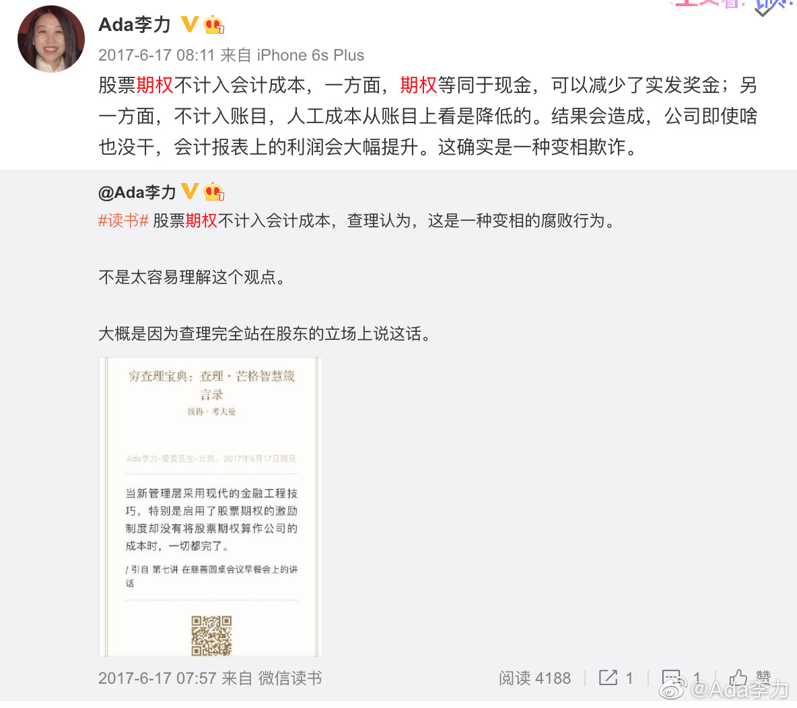

#一个人的企业#
最早对期权的理解来自风险投资的科普，认为这是极好的员工激励措施。
后来看到查理芒格对期权的看法，认为不计入成本是腐败之举，虽然觉得困惑，但还是认为芒格这么聪明的人，说的话一定有道理，不理解我也要接受。
再读段永平问答，看到有人拿芒格关于期权的说法问段，段直接回答：“如果只是这么一段论述，我认为芒格的看法不对。” 段永平认为期权这类跟经济挂钩的措施属于保健因子，没有不行，但多了也起不到激励作用。激励因子在精神层面。
我感慨的是，段永平花天价买过跟巴菲特的午餐，对巴菲特芒格思想相当认同，但具体到某些看法，他能很直接地根据自己的认知，来判断对和不对。
我会因为对方身份而判定是否接受对方的理论，说到原因，是我还没有建立起自己稳定的认知内核。
最早对期权的理解来自风险投资的科普，认为这是极好的员工激励措施。
后来看到查理芒格对期权的看法，认为不计入成本是腐败之举，虽然觉得困惑，但还是认为芒格这么聪明的人，说的话一定有道理，不理解我也要接受。
再读段永平问答，看到有人拿芒格关于期权的说法问段，段直接回答：“如果只是这么一段论述，我认为芒格的看法不对。” 段永平认为期权这类跟经济挂钩的措施属于保健因子，没有不行，但多了也起不到激励作用。激励因子在精神层面。
我感慨的是，段永平花天价买过跟巴菲特的午餐，对巴菲特芒格思想相当认同，但具体到某些看法，他能很直接地根据自己的认知，来判断对和不对。
我会因为对方身份而判定是否接受对方的理论，说到原因，是我还没有建立起自己稳定的认知内核。
- 